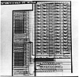

by Abraham Kandel
CRC Press, CRC Press LLC
ISBN: 084934297x Pub Date: 11/01/91
|
|
Fuzzy Expert Systems
by Abraham Kandel CRC Press, CRC Press LLC ISBN: 084934297x Pub Date: 11/01/91 |
| Previous | Table of Contents | Next |
Timing tests on fabricated chips indicate a 20.8 MHz (48 nsec cycle time) operating rate. With the current data format of 124 bits per rule, a single inference process takes 256 clock cycles. Thus, the engine can perform approximately 80,000 fuzzy logical inference per second (FLIPS), which is more than 40,000 times faster than the simulation conducted on VAX-11/785. The chip has a drastic speed advantage over the conventional approach. If the resolution of rules is doubled, the speed of the inference engine is halved. However, by assigning two data paths per rule, we can reduce the slowdown to a few clock cycles per inference.
Figure 6 Serial minimum unit.
Figure 7 Single data path of inference processor.
The advantage of the architecture is its simplicity which in turn makes this architecture easily extendable. Most important extensibility is to cope with the deferent format of rules. In the simplest case, we would like to increase or decrease the resolution of membership function. In the current format of the rule representation, we used 31 integers of four bits each. This can be modified with minor changes in the layout. For example, the number of elements in the universe of discourse (number of data points) can be increased to more than 31. It can be achieved with only a minor modification of the controller without any change in the inferencing part of the architecture. We can use higher resolution for digitization of membership function using more than four bits. We can achieve this by increasing the length of the shift register and modifying the controller. The number of rules can be increased by laying out more data paths and modifying the binary tree layout accordingly.
Figure 8 Binary tree of maximum units.

Figure 9 Mask layout of inference engine.
We can also have more than one clause in the if part of the rule. The prototype chip has only one clause in the if-part of the rule and one clause (i.e., action) in the then part of the rule. As we have seen in an example of the cement kiln controller (Section II.B), rules often have more than one clause in the if part. Extension of the data path to handle multiple clauses is fairly straightforward. We can expect that multiple clauses are connected by the logical connective and. If clauses are connected by the logical connective or, we can divide a single rule to independent multiple rules. For each clause in a rule, we compute an α value independently. A minimum of them are used for truncation of the then part of a rule. Each data path still consists of the same basic units. Figure 10 shows the architecture of a single data path for the four clause rule. We can compute the minimum of the α values by a binary tree of serial minimum units.
We can speed up the throughput of the inference processor by a minor modification of the architecture. By introducing another shift register, we can make a pipelining processor. The antecedent (first level) and the conclusion (second level) are performed simultaneously. The second shift register should be introduced right after the current shift register. The first shift register is used to keep the running maximum for αi in the processing of the antecedent. The second shift register keeps the computed αi for processing of the conclusion part. The throughput of the processor is doubled by this pipelining.
Another architectural possibility is the use of multiple data paths per rule. In this case, there is an area vs. speed trade off. For example, by assigning two data paths per rule, we can almost double the processing speed and a single clock cycle is absorbed by the overhead. We store each half of the rule independently. The corresponding half of the observation is loaded from two pins. In the first level and the second level of the processor, each half of the rule set and observations are processed almost independently. An extra maximum operation is necessary to combine the result of each half for αi at the end of the first level. We now need two independent binary trees of the maximum units at the second level. The sketch of this architecture is shown in Figure 11.
Notice that the execution of each rule is done independently by a single data path except in the last step of the second stage where the selection of the maximum elements is done. In order to cope with the large number of rules, a chip set can be designed in a rule-sliced manner. Each chip executes a subset of rules (for example, 32 rules per chip). A very large number of rules can be executed in parallel by cascading them. The selection of the final result can be done by designing a maximum number selector as an independent chip. For example, if we have a 32 input maximum number selector (see Figure 8), we can combine 1024 data paths using two layers of such selectors.
We are designing an integrated system based on the VLSI fuzzy inference engine. In order to achieve general purpose interface, we use a single board computer as a host system. The fuzzy inference engine is integrated as a co-processor for approximate inference. The host processor communicates with a controller, a sensor, and a user. In order to make a rule set programmable, a ROM is replaced by a high speed static RAM. The overall configuration of the integrated system is shown in Figure 12.
Figure 10 Four clauses in condition.
Figure 11 Two data path for a single rule.
Figure 12 Integrated system.
We have designed and fabricated a chip for a real-time approximate reasoning based on the “max-min operation” of fuzzy set theory. The architecture and chip design of this inference engine have been presented. An actual inference engine has been fabricated on a chip using custom CMOS technology. The VLSI design emphasizes simplicity, extensibility, and efficiency. Preliminary timing tests have been performed and indicate that the chip can perform approximately 80,000 fuzzy logical inferences per second, which is more than 40,000 times faster than conventional software approach. The potential applications of this inference engine for real-time use include decision making in the area of command and control, intelligent controllers, and intelligent robot systems (e.g., References 2 and 4).
| Previous | Table of Contents | Next |
){kind=link}
){kind=link}
){kind=link}
){kind=link}
){kind=link}
){kind=link}
){kind=link}